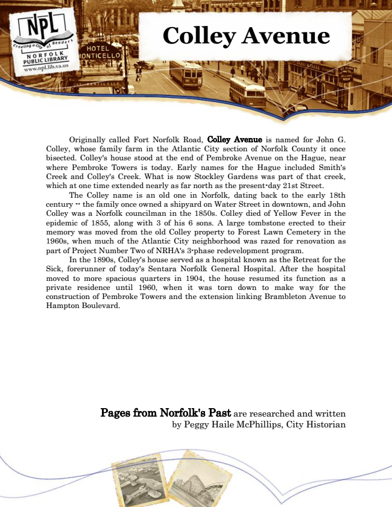

Colley Avenue
Originally called Fort Norfolk Road, Colley Avenue is named for John G. Colley, whose family farm in the Atlantic City section of Norfolk County it once bisected. Colley's house stood at the end of Pembroke Avenue on the Hague, near where Pembroke Towers is today. Early names for the Hague included Smith's Creek and Colley's Creek. What is now Stockley Gardens was part of that creek, which at one time extended nearly as far north as the present-day 21st Street.
The Colley name is an old one in Norfolk, dating back to the early 18th century -- the family once owned a shipyard on Water Street in downtown, and John Colley was a Norfolk councilman in the 1850s. Colley died of Yellow Fever in the epidemic of 1855, along with 3 of his 6 sons. A large tombstone erected to their memory was moved from the old Colley property to Forest Lawn Cemetery in the 1960s, when much of the Atlantic City neighborhood was razed for renovation as part of Project Number Two of NRHA's 3-phase redevelopment program.
In the 1890s, Colley's house served as a hospital known as the Retreat for the Sick, forerunner of today's Sentara Norfolk General Hospital. After the hospital moved to more spacious quarters in 1904, the house resumed its function as a private residence until 1960, when it was torn down to make way for the construction of Pembroke Towers and the extension linking Brambleton Avenue to Hampton Boulevard.
Pages from Norfolk's Past are researched and written by Peggy Haile McPhillips, City Historian